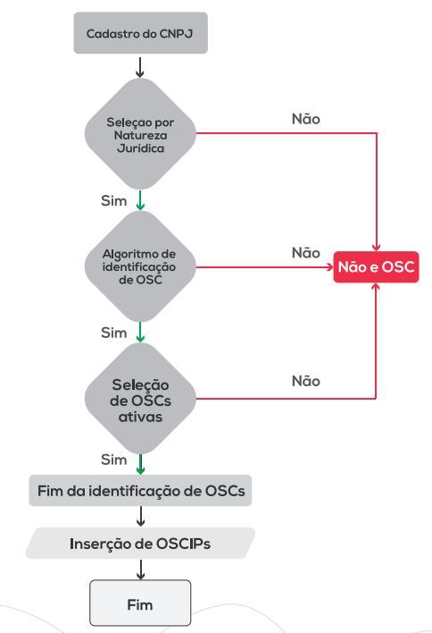

Capítulo 3 Metodologia
3.1 Fonte de Dados e Metodologia de Identificação das OSCs
Fonte de Dados e Metodologia de Identificação das OSCs O Mapa das Organizações da Sociedade Civil - MOSC, apesar de ter múltiplas fontes de dados de origem, tem sua principal fonte de informações nos dados públicos do Cadastro Nacional de Pessoa Jurídica -CNPJgerido pela Receita Federal do Brasil -RFB. Este Cadastro é publicado desde 2017, e contém registros de todas as organizações domiciliadas no Brasil e seus estabelecimentos no exterior. Segundo Andrade e Pereira:
A base do CNPJ é uma fonte de informação mantida pela SRFB do tipo estoque, em que, continuamente, são armazenadas características sobre entidades e estabelecimentos filiais, inscritos no cadastro de mesmo nome. Nele constam os estabelecimentos com inscrição ativa ou não, correspondendo a todas as entidades domiciliadas no Brasil e seus estabelecimentos domiciliados no exterior, inclusive as pessoas jurídicas equiparadas pela legislação do imposto sobre a renda estão obrigadas a se inscrever no CNPJ (BRASIL, 2018). A divulgação da base detalhada do CNPJ, incluindo o número identificador do CNPJ de cada organização, é realizada trimestralmente pela SRFB, em que informações, como natureza jurídica, nome fantasia, razão social, situação cadastral, município, endereço, telefone e nomes dos sócios, são disponibilizadas (ANDRADE; PEREIRA, 2019, p. 11).
As OSCs são um subconjunto do grupo de natureza jurídica código “3” — Entidades Sem Fins Lucrativos (ESFL). Elas possuem características específicas que as distinguem das demais entidades desse grupo. De acordo com a Lei nº 13.204/2015, uma OSC corresponde a:
- entidade privada sem fins lucrativos que não distribua entre os seus sócios ou associados, conselheiros, diretores, empregados, doadores ou terceiros eventuais resultados, sobras, excedentes operacionais, brutos ou líquidos, dividendos, isenções de qualquer natureza, participações ou parcelas do seu patrimônio, auferidos mediante o exercício de suas atividades, e que os aplique integralmente na consecução do respectivo objeto social, de forma imediata ou por meio da constituição de fundo patrimonial ou fundo de reserva;
- as sociedades cooperativas previstas na Lei nº 9.867, de 10 de novembro de 1999; as integradas por pessoas em situação de risco ou vulnerabilidade pessoal ou social; as alcançadas por programas e ações de combate à pobreza e de geração de trabalho e renda; as voltadas para fomento, educação e capacitação de trabalhadores rurais ou capacitação de agentes de assistência técnica e extensão rural; e as capacitadas para execução de atividades ou de projetos de interesse público e de cunho social; e
- as organizações religiosas que se dediquem a atividades ou a projetos de interesse público e de cunho social distintas das destinadas a fins exclusivamente religiosos (BRASIL, 2015)
Com relação ao último ponto, é preciso deixar claro que o Mapa não exclui nenhuma organização religiosa. Diferentemente da Lei 13.204/2015, o Mapa não considera OSCs apenas as organizações “que se dediquem a atividades ou projetos de interesse público ou de cunho social distintos das destinadas a fins exclusivamente religiosos”. Isso ocorre porque, atualmente, não há meios de distinguir as organizações religiosas que realizam atividades sociais daquelas dedicadas apenas ao culto.
Dessa forma, as OSCs são entidades que desempenham papel e possuem características específicas:privadas, sem fins de lucro, legalmente constituídas, autoadministradas e voluntárias. A ONU enumera cinco características, que são utilizadas para identificar estas entidades (UN, 2003):
- Privadas, não integrantes, portanto, do aparelho de Estado.
- Sem fins lucrativos, isto é, organizações que não distribuem eventuais excedentes entre os proprietários ou diretores e que não possuem como razão primeira de existência a geração de lucros – podendo até gerá-los, desde que aplicados nas atividades fins.
- Institucionalizadas, isto é, legalmente constituídas.
- Autoadministradas ou capazes de gerenciar suas próprias atividades.
- Voluntárias, na medida em que podem ser constituídas livremente por qualquer grupo de pessoas, isto é, a atividade de associação ou de fundação da entidade é livremente decidida pelos sócios ou fundadores.
Tendo em vista esses critérios, grande parte das naturezas jurídicas do grupo de ESFL podem ser descartadas, restando apenas algumas categorias aderentes às especificações. O MOSC, desde sua primeira edição, considera como elegíveis a serem OSCs as entidades com os seguintes códigos de natureza jurídica: associações privadas (código 399-9), fundações privadas (código 306- 9), organizações religiosas (código 322-0) e organizações sociais -OS (código 330-1) (LOPEZ, 2018). Lopez ressalta que a Lei nº 13.019/2014, ao conceituar OSCs, adiciona às pessoas jurídicas de direito privado sem fins lucrativos as denominadas cooperativas sociais e as sociedades cooperativas integradas por trabalhadores em situação social vulnerável, fomento e capacitação de trabalhadores rurais ou ações de cunho social.
As Associações Privadas, segundo a Tabela de Natureza Jurídica de 2018, foram previstas nos arts. 53 a 61 da Lei nº 10.406, de 10 de janeiro de 2002, do Código Civil (Brasil, 2002). Esta natureza jurídica compreende: as associações profissionais ou de classe; os fundos de pensão; as organizações não governamentais; os fundos garantidores de créditos; os consórcios públicos de direito privado; as organizações da sociedade civil de interesse público (Oscips); as unidades executoras do Programa Dinheiro Direto na Escola; as organizações indígenas; e as associações criadas pelos partidos políticos, quando estas se constituírem sob a forma de associação. As Fundações Privadas referem-se às fundações criadas pela iniciativa dos particulares e as fundações instituídas pela livre iniciativa de particulares, pessoas físicas e/ou pessoas jurídicas, regidas inteiramente pelo direito privado, previstas nos arts. 44 (inciso III), 62 a 69 da Lei nº 10.406, de 10 de janeiro de 2002, do Código Civil (Brasil, 2002). Adicionalmente, esta natureza jurídica compreende, também, os estabelecimentos quando constituídos sob a forma de fundação privada: os fundos de pensão; as Oscips; as organizações não governamentais e as fundações instituídas pelos partidos políticos. A natureza jurídica Organizações Religiosas refere-se às entidades religiosas, com base legal no art. 2º da Lei nº 10.825, de 22 de dezembro de 2003 (Brasil, 2003). Já as Organizações Sociais diz respeito às pessoas jurídicas de direito privado, sem fins lucrativos, desde que tenham sido qualificadas como organização social nos termos da Lei Federal nº 9.637, de 15 de maio de 1998 (Brasil, 1998), ou de lei estadual, ou distrital ou municipal. Nesse sentido, as OS constituem-se como uma outorga (ANDRADE; PEREIRA, 2019, p. 10)
Dentro desses quatro grupos, apenas algumas entidades se enquadram nos cinco critérios da ONU empregados pelo Mapa das OSCs, em especial sobre suas finalidades de atuação e a autoadministração. De acordo com o IBGE (2019), as entidades que devem ser desconsideradas, são:
Caixas escolares: não são privadas; Partidos políticos: não são voluntários; Sindicatos, federações e confederações: não são voluntários; Condomínios: não são voluntários; Cartórios: não são privados, auto administrados e voluntários; Sistema S: não são voluntários; Entidades de mediação e arbitragem: são lucrativas; Comissões de conciliação prévia: não são voluntários; Conselhos, fundos e consórcios municipais: não são privadas; Cemitérios e funerárias: não são privadas, sem fins lucrativos e voluntárias.
(IBGE, 2019, p. 15);
Também são excluídas as entidades que apesar de possuírem naturezas jurídicas específicas, estão erroneamente inscritas nas quatro naturezas jurídicas mencionadas e não possuem características de OSCs alinhadas com o princípios da ONU supramencionados: sistema S (307-7); condomínios (308-5 e 331-0); entidades sindicais (313-1); órgãos vinculados a partidos políticos (325-5, 326- 3 e 327-1); e cartórios (303-4).
Ao considerar tudo que foi mencionado, construiu-se um algoritmo de seleção de OSCs, que será detalhado na próxima seção. Ele consiste, basicamente, na aplicação de filtros em variáveis específicas, aliado a técnicas de mineração de texto, bem como controle sobre as atividades econômicas selecionadas. Adicionalmente ao resultado obtido no algoritmo de seleção, foram incluídas as Oscips , listadas pelo CNPJ, a partir da base de dados do Sistema Oscip, do Ministério da Justiça, que por ventura não puderam ser identificadas no algoritmo de identificação de OSCs.
3.2 O Algoritmo de Identificação das OSCs
Esta seção retoma o que foi apresentado por Andrade e Pereira (2019) na edição anterior da publicação “Por dentro do mapa das OSC” e apresenta os aprimoramentos que foram realizados no algoritmo de identificação de OSCs. São apresentados os totais de entidades, comparando com a edição anterior e especificidades que foram identificadas nessa atualização do MOSC.
Os dados utilizados nessa edição do MOSC se referem última atualização do Mapa (fevereiro de 2025) e, conforme realizado anteriormente, a identificação de OSCs utiliza as seguintes variáveis: CNPJ, razão social, nome fantasia, situação cadastral, natureza jurídica e Classificação Nacional de Atividades Econômicas (CNAE) (ANDRADE; PEREIRA, 2019). Primeiro são selecionadas empresas com naturezas jurídicas elegíveis a serem OSCs (associações privadas, fundações privadas, organizações religiosas e organizações sociais); depois, o algoritmo é utilizado para identificar as empresas que são OSCs; na sequência, são identificadas as OSCs ativas; e, por fim, são inseridas Oscips que por ventura não foram identificadas pelo algoritmo, finalizando identificação de OSCs que estarão presentes no cadastro do MOSC.
O algoritmo de identificação de OSCs operacionaliza o que foi apresentado na seção anterior por meio da linguagem de programação R, utilizando mineração de texto nos campos de razão social, nome fantasia e atividade econômica. Nesta edição, foram realizados aprimoramentos nas palavras utilizadas na mineração de texto para melhorar a seleção de OSCs. A figura 2 exibe um fluxograma descrevendo as etapas desse algoritmo.
As informações divulgadas nos microdados do CNPJ pela RFB correspondem à última data em que a empresa fez alguma atualização cadastral. Portanto, o histórico de atualizações das empresas ou estabelecimentos não é divulgado.
Após a identificação de OSCs, foram selecionadas apenas as organizações com situação cadastral que consideramos elegíveis para estar no Mapa: ativas, suspensas ou inaptas. São excluídas as organizações com situação cadastral “nula” ou “baixada”. A descrição das situações cadastrais se encontra abaixo (Brasil, 2018). Ativa (código 02): a inscrição no CNPJ é considerada ativa quando a entidade ou o estabelecimento filial não se enquadrar em nenhuma das outras situações cadastrais listadas a seguir.
- Suspensa (código 03): quando a entidade ou o estabelecimento filial se enquadrar em alguns casos específicos, como: não cumprir com as obrigações previstas ou apresentar inconsistências cadastrais; estar em processo de baixa de sua inscrição no CNPJ; apresentar indício de interposição fraudulenta de sócio ou titular; declarar a interrupção temporária de suas atividades; por ordem judicial etc. Neste caso, apesar de a entidade estar suspensa, seu CNPJ não é desativado.
- Inapta (código 04): são consideradas inaptas as organizações que, por dois exercícios consecutivos, omitem as declarações e demonstrativos pertencentes a uma série de documentos cadastrais; não for localizada no endereço cadastrado no CNPJ; e tiverem irregularidades em operações de comércio exterior. Dessa forma, apesar de a entidade ficar inapta, seu CNPJ não é desativado.
- Baixada (código 08): quando a organização opta por dar baixa no seu CNPJ, podendo ter sua inscrição restabelecida no futuro. Assim, ela fica inativa no período em que seu CNPJ estiver baixado.
- Nula (código 01): quando for declarada a nulidade do ato de inscrição do CNPJ, no caso de haver mais de um número, para o mesmo estabelecimento; for constatado vício no ato cadastral ou quando se enquadrar em casos específicos em que não é obrigatório se cadastrar no CNPJ. Desse modo, este CNPJ é cancelado.
O Mapa das OSCs, ao incluir as organizações inaptas ou suspensas, privilegiou manter CNPJs que talvez pudessem ser excluídos. Entretanto, as organizações em ambas as situações, em tese, podem ainda operar ou regularizar sua situação. As pessoas que explorarem as bases de dados do Mapa das OSCs poderão avaliar a pertinência ou a conveniência de não incluir estas situações cadastrais, bastando para tal excluí-las das bases de microdados.
Abaixo está o Fluxograma de todo o processo de atualização do Mapa das OSC
Figura 3.1 – Fluxograma da construção da base de dados do Mapa das OSCs, versão 2021 